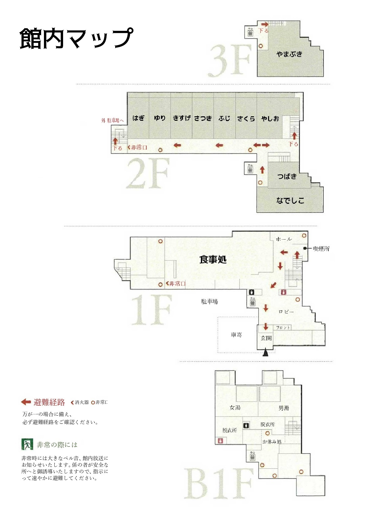

📑 もくじ 目次 विषयसूची
1. しゅっきんじのじゅんび出勤時の準備/काममा आउने बेलाको तयारी
ジムショへ アイサツ、ショクジバショの ヘヤワリを かく。事務所へあいさつし、食事場所の部屋割りを書く。कार्यालयमा अभिवादन गरेर, भोजनस्थलको कोठा बाँडफाँट लेख्नुहोस्।
ノイヒンされた ユカタなどが、テーブルにあれば、かたづけます。納品された浴衣などがテーブルにあれば、片付けます。टेबुलमा ल्याइएका युकाता आदि भएमा, मिलाएर राख्नुहोस्।
タブレットの ボウハンカメラ きどうタブレットの防犯カメラ起動/ट्याब्लेटको सुरक्षा क्यामेरा सुरु गर्नु
タブレットで ボウハンカメラを きどうし、つねに カンシ できるようにします。タブレットで防犯カメラを起動し、常に監視できるようにします。ट्याब्लेटमा सुरक्षा क्यामेरा सुरु गरेर, सधैं निगरानी गर्न सकिने अवस्थामा राख्नुहोस्।
みずやのかたづけ水屋の片付け/मिजुया सफा गर्ने
みずやの グラスなどをかたづけ、ジムショに マッチャわんや ヨウカンをもっていきます。水屋のグラスなどを片付け、事務所に抹茶碗や羊羹を持っていきます。मिजुयाका गिलास आदि मिलाएर, कार्यालयमा माचा कचौरा र योउकान लैजानुहोस्।
ポットの おんどへんこうポットの温度変更/पोटको तापक्रम परिवर्तन
ポットのおんどを 90どから 98どに へんこうします。ポットの温度を90度から98度に変更します。पोटको तापक्रम ९० डिग्रीबाट ९८ डिग्रीमा परिवर्तन गर्नुहोस्।
2. おきゃくさまの ライカンかくにんお客様の来館確認/पाहुनाको आगमन पुष्टि
タブレットかくにんタブレット確認/ट्याब्लेट जाँच
さぎょうしながら、タブレットの カメラがめんを かくにんし、おきゃくさまの ライカンを チェックします。作業しながら、タブレットのカメラ画面を確認し、お客様の来館をチェックします。काम गर्दै गर्दा ट्याब्लेटको क्यामेरा स्क्रिन जाँचेर, पाहुनाको आगमन पुष्टि गर्नुहोस्।
3. おきゃくさまのおむかえお客様のお迎え/पाहुनालाई स्वागत गर्ने
チュウシャジョウでの たいおう駐車場での対応/पार्किङमा गरिने सेवा
くるまが チュウシャジョウに トウチャクしたら、おきゃくさまを むかえにいき、「いらっしゃいませ」と あいさつします。車が駐車場に到着したら、お客様を迎えに行き、「いらっしゃいませ」とあいさつします。गाडी पार्किङमा पुगेपछि पाहुनालाई स्वागत गर्न जानुहोस् र 「いらっしゃいませ」 भनेर अभिवादन गर्नुहोस्।
「おはこびできる、おにもつ があれば、おてつだいします。」と おつたえし、にもつを はこんで フロントへ あんないします。「お運びできるお荷物があれば、お手伝いします。」とお伝えし、荷物を運んでフロントへ案内します。「यदि बोक्न मिल्ने सामान छ भने म सहयोग गर्छु。」 भनेर भनिर, सामान बोक्दै फ्रन्टतर्फ लैजानुहोस्।
4. フロントでのたいおうフロントでの対応/फ्रन्टमा गरिने सेवा
にもつのとりあつかい荷物の取り扱い/सामान सम्हाल्ने
フロントに あんないしたら、「にもつを テーブルに おかせていただきます。」と おつたえし、にもつを おきます。フロントに案内したら、「荷物をテーブルに置かせていただきます。」とお伝えし、荷物を置きます。फ्रन्टमा ल्याएपछि 「सामान टेबुलमा राख्न दिनुहोस्。」 भनेर भनिर, सामान राख्नुहोस्।
チェックインのてつづきチェックインの手続き/चेकइन प्रक्रिया
おきゃくさまに チェックインを していただきます。お客様にチェックインをしていただきます。पाहुनालाई चेकइन गर्न अनुरोध गर्नुहोस्।
まえの おきゃくさまが いたり、スタッフが いない ばあいは、「ごあんないしますので、おかけいただいて、しょうしょう おまちください」と おつたえして、イスに すわってもらいます。前のお客様がいたり、スタッフがいない場合は、「ご案内しますので、お掛けいただいて、少々お待ちください」とお伝えして、椅子に座ってもらいます。अघिका पाहुना अझै हुनुहुन्छ वा कर्मचारी नभएको अवस्थामा 「अहिले मार्गदर्शन गर्छौं, कृपया बस्नुहोस् र केही बेर पर्खनुहोस्。」 भनेर कुर्सीमा बस्न अनुरोध गर्नुहोस्।
5. にもつをはこぶ荷物を運ぶ/सामान बोक्ने
にもつの かくにんとはこぶ荷物の確認と運搬/सामान जाँच र बोकाइ
チェックインじに おきゃくさまの にもつを へやに はこんでも よいか かくにんします。チェックイン時に、お客様の荷物を部屋に運んでもよいか確認します。चेकइनको समयमा पाहुनाको सामान कोठामा लैजान मिल्छ कि मिल्दैन पुष्टि गर्नुहोस्।
へやめいと はこんでも よい にもつを かくにんして、にもつを へやに はこびます。部屋名と運んでもよい荷物を確認して、荷物を部屋に運びます。कोठाको नाम र बोक्न मिल्ने सामान पुष्टि गरेर, सामान कोठामा पुर्याउनुहोस्।
6. マッチャとヨウカンのじゅんび抹茶と羊羹の準備/माचा र योउकानको तयारी
じゅんび さぎょう準備作業/तयारीको काम
マッチャと ヨウカンの じゅんびを します。抹茶と羊羹の準備をします。माचा र योउकानको तयारी गर्नुहोस्।
7. ゆかたのとりあつかい浴衣の取り扱い/युकाता सम्हाल्ने तरिका
ゆかたと コモノの おあずかり浴衣と小物のお預かり/युकाता र सामान राखेर लिने
じょせいの おきゃくさまが、ゆかたと コモノを えらびおえたら、おあずかりして「あとで、おちゃと いっしょに、へやに はこばせて いただきます。」と おつたえします。女性のお客様が浴衣と小物を選び終えたらお預かりして、「あとでお茶と一緒に、部屋に運ばせていただきます。」とお伝えします。महिला पाहुनाले युकाता र साना सामान छानिसकेपछि राखेर लिई, 「पछि चियासँगै कोठामा ल्याइदिन्छु。」 भनेर बताउनुहोस्।
8. おへやへのはいぜんお部屋への配膳/कोठामा सेवा पुर्याउने
へやに トウチャク部屋に到着/कोठामा पुग्ने
おきゃくさまが エレベーターで へやに あがったら、マッチャを たてて、ゆかたと いっしょに へやに はこびます。お客様がエレベーターで部屋に上がったら、抹茶をたてて、浴衣と一緒に部屋に運びます。पाहुना एलिभेटरबाट कोठामा पुग्नुभएपछि, माचा तयार गरेर युकातासँगै कोठामा लैजानुहोस्।
へやの ドアを 3かい ノックし、「しつれいいたします。」と いいながら へやに はいります。部屋のドアを3回ノックし、「失礼いたします。」と言いながら部屋に入ります。कोठाको ढोका ३ पटक ढकढक्याएर 「失礼いたします。」 भनिर भित्र पस्नुहोस्।
マッチャと ヨウカンの はいぜん抹茶と羊羹の配膳/माचा र योउकान सेवा गर्ने
「おちゃの ごよういを させていただきます。」と いい、テーブルに マッチャと ヨウカンを はいぜんします。「お茶のご用意をさせていただきます。」と言い、テーブルに抹茶と羊羹を配膳します。「म चियाको तयारी गर्छु。」 भनेर भनिर, टेबुलमा माचा र योउकान सेवा गर्नुहोस्।
「こちらは、マッチャと、ジカセイの ヨウカンですので、おめしあがりください。」と せつめいします。「こちらは抹茶と、自家製の羊羹ですので、お召し上がりください。」と説明します。「यो माचा र घरमा बनाइएको योउकान हो, कृपया खानुहोस्。」 भनेर बुझाउनुहोस्।
9. タブレットと チョウショクの あんないタブレットと朝食の案内/ट्याब्लेट र बिहानको खानाको जानकारी
タブレットの つかいかたタブレットの使い方/ट्याब्लेट कसरी प्रयोग गर्ने
「こちらの タブレットに、インフォメーションを ごよういして おりますので、ごらんください。」と おつたえします。「こちらのタブレットにインフォメーションをご用意しておりますので、ご覧ください。」とお伝えします。「यस ट्याब्लेटमा जानकारी राखिएको छ, कृपया हेर्नुहोस्。」 भनेर बताउनुहोस्।
チョウショクの あんない朝食の案内/बिहानको खानाको जानकारी
「こちらは、チョウショクの ごあんないです。キホンのセットに、したの 3つの チョイスから おすきなものを えらんでください。ごユウショクの さいに おうかがいします。」と あんないします。「こちらは朝食のご案内です。基本のセットに、下の3つのチョイスからお好きなものを選んでください。ご夕食の際にお伺いします。」と案内します。「यो बिहानको खानाको जानकारी हो। आधारभूत सेटमा तलका ३ विकल्पमध्ये मनपर्ने छान्नुहोस्। बेलुकाको खानाको समयमा सोध्नेछौं。」 भनेर 안내 गर्नुहोस्。
SPちょうしょくの ばあいは、「こちらは、ちょうしょくの ごあんないとなります。おひとりさまずつ おすきなのみものと たまごりょうりを えらんでいただいております。」と あんないします。SP朝食の場合は、「こちらは朝食のご案内となります。お一人さまずつ、お好きな飲み物と卵料理を選んでいただいております。」と案内します。विशेष बिहानको खानाको अवस्थामा 「यो बिहानको खानाको जानकारी हो। प्रत्येक जनाले मनपर्ने पेय र अण्डाको परिकार छान्नुहुन्छ。」 भनेर 안내 गर्नुहोस्。
「ごゆうしょくの さいに、おうかがいさせて いただきますので、それまでに おきめください。」と おつたえします。「ご夕食の際にお伺いさせていただきますので、それまでにお決めください。」とお伝えします。「बेलुकाको खानाको समयमा सोध्नेछौं, त्यसबेला सम्म निर्णय गरिदिनुहोस्。」 भनेर बताउनुहोस्。
10. へやセツビのあんない部屋設備の案内/कोठाका सुविधाको जानकारी
デンワの つかいかた電話の使い方/फोन प्रयोग गर्ने तरिका
「なにかございましたら、こちらの デンワの ジュワキを あげて、フロントに ごれんらくください。」と あんないします。「何かございましたら、こちらの電話の受話器を上げて、フロントにご連絡ください。」と案内します。「केही आवश्यक परेमा, यो फोनको रिसिभर उठाएर फ्रन्टमा सम्पर्क गर्नुहोस्。」 भनेर बताउनुहोस्。
11. ゆかたの しまいかた浴衣のしまい方/युकाता मिलाएर राख्ने तरिका
ゆかたと こものの セイリ浴衣と小物の整理/युकाता र साना सामान मिलाउने
「おえらびいただいた ゆかたを しまわせて いただきます。」と いいながら ゆかたを しまいます。「お選びいただいた浴衣をしまわせていただきます。」と言いながら、浴衣をしまいます。「तपाईंले छान्नुभएको युकाता मिलाएर राख्छु。」 भनेर भनिर युकाता मिलाउनुहोस्।
「こちらに ゆかたと バスタオル、フリーサイズの サムエが あります。カンナイは どちらでも だいじょうぶですので、すごしやすい かっこうで すごしてください。」と せつめいします。「こちらに浴衣とバスタオル、フリーサイズの作務衣があります。館内はどちらでも大丈夫ですので、過ごしやすい格好でお過ごしください。」と説明します。「यहाँ युकाता, बाथ टावल र फ्री साइजको सामुए छ। भवनभित्र दुवैमध्ये जुन सजिलो हुन्छ त्यही लगाएर आरामसँग बस्नुहोस्。」 भनेर説明します。
12. へやをでる部屋を出る/कोठाबाट बाहिर निस्कने
へやをでる部屋を出る/कोठाबाट बाहिर निस्कने
「ごゆっくり、おすごしください。」と つたえ、へやを でます。「ごゆっくりお過ごしください。」と伝え、部屋を出ます。「कृपया आरामसँग समय बिताउनुहोस्。」 भनेर भनिर कोठाबाट बाहिर निस्कनुहोस्।
くつとスリッパのこうかん靴とスリッパの交換/जुत्ता र स्लिपर साट्ने
へやを でたあと、ゲンカンの おきゃくさまの くつと スリッパを こうかんします。部屋を出たあと、玄関のお客様の靴とスリッパを交換します。कोठाबाट निस्किएपछि, प्रवेशद्वारमा पाहुनाको जुत्ता र स्लिपर साट्नुहोस्।

1. きほん ぎょうむ の ながれ基本業務の流れ/आधारभूत कामको क्रम
あさの ふつうの しごとを しながら、タブレットの えいぞうで フロントの じょうきょうを かくにんします。朝の通常業務をしながら、タブレットの映像でフロントの状況を確認します。बिहानको सामान्य काम गर्दै गर्दा, ट्याब्लेटको दृश्यबाट फ्रन्टको अवस्था जाँच गर्नुहोस्।
9じ50ふんに なったら、おきゃくさまの チェックアウトの じょうきょうに おうじて フロントちかくで たいきし、チェックアウト たいおうを ゆうせんします。9時50分になったら、お客様のチェックアウトの状況に応じてフロント近くで待機し、チェックアウト対応を優先します。९:५० भएपछि, पाहुनाको चेकआउट अवस्थाअनुसार फ्रन्ट नजिक प्रतीक्षा गरी, चेकआउट सेवालाई प्राथमिकता दिनुहोस्।
フロントに おきゃくさまが きて チェックアウトを される ばあい、または フロントからの よびだしが あった ばあいは、すみやかに むかいます。フロントにお客様が来てチェックアウトをされる場合、またはフロントから呼び出しがあった場合は、速やかに向かいます。पाहुना फ्रन्टमा आएर चेकआउट गर्ने भएमा, वा फ्रन्टबाट बोलावट आएमा, तुरुन्तै जानुहोस्।
9じ50ふんまえの チェックアウトの とき、しごとに もどるか たいきを つづけるか はんだんが むずかしい ばあいは、かならず おかみ または せんむに かくにんを とります。9時50分前のチェックアウトのとき、仕事に戻るか待機を続けるか判断が難しい場合は、必ず女将または専務に確認を取ります。९:५० अघि चेकआउट हुँदा, काममा फर्कने कि प्रतीक्षा जारी राख्ने भन्ने निर्णय कठिन भएमा, अनिवार्य रूपमा ओकामी वा सेन्मुबाट पुष्टि लिनुहोस्।
2. チェックアウト の たいおうチェックアウトの対応/चेकआउटको सेवा
かいけい の たいき会計時の待機/भुक्तानी हुँदा प्रतीक्षा
チェックアウトを している、または まっている おきゃくさまに「ありがとうございました。」と あいさつを いって、フロントにて おきゃくさまの かいけいが おわるまで たいきします。チェックアウトをしている、または待っているお客様に「ありがとうございました。」とあいさつをして、フロントにてお客様の会計が終わるまで待機します。चेकआउट गरिरहनु भएका वा पर्खिरहनु भएका पाहुनालाई 「ありがとうございました。」 भनेर अभिवादन गरी, फ्रन्टमा भुक्तानी सकिएसम्म प्रतीक्षा गर्नुहोस्।
かいけい しゅうりょうご、えがおで おれいを いいます。会計終了後、笑顔でお礼を言います。भुक्तानी सकिएपछि मुस्कानसहित धन्यवाद दिनुहोस्।
きねん さつえい の あんない記念撮影の案内/स्मरण फोटोको जानकारी
「よろしければ げんかんまえで きねん さつえいを しているの ですが、いかがでしょうか？」と おこえがけします。「よろしければ玄関前で記念撮影をしているのですが、いかがでしょうか？」とお声がけします。「यदि चाहनुहुन्छ भने प्रवेशद्वारअगाडि स्मरण फोटो खिचिरहेका छौं, कस्तो हुन्छ？」 भनेर सोध्नुहोस्।
にもつが あるときは、フロントに おいて さつえいを することを おすすめします。荷物があるときは、フロントに置いて撮影をすることをおすすめします。सामान भएमा, फ्रन्टमा राखेर फोटो खिच्न सिफारिस गर्नुहोस्।
おきゃくさまから カメラや スマートフォンを あずかり、げんかん いりぐちの かんばんを ふくめた じょうたいで 1まいから 2まいほど さつえいします。お客様からカメラやスマートフォンを預かり、玄関入口の看板を含めた状態で1枚から2枚ほど撮影します。पाहुनाबाट क्यामेरा वा स्मार्टफोन लिएर, प्रवेशद्वारको साइनबोर्ड समेटेर १ देखि २ वटा फोटो खिच्नुहोस्।
さつえいご、おきゃくさまに おれいを いって おかえしします。撮影後、お客様にお礼を言ってお返しします。फोटो खिचिसकेपछि धन्यवाद दिई उपकरण फिर्ता गर्नुहोस्।
おみおくり の たいおうお見送りの対応/बिदाइ गर्ने सेवा
あるいて かえる おきゃくさまには、いりぐちまで ごあんないし、おみおくりします。歩いて帰るお客様には、入口までご案内し、お見送りします。हिँडेर फर्कने पाहुनालाई प्रवेशद्वारसम्म पुर्याएर बिदाइ गर्नुहोस्।
バス・タクシーを りようする おきゃくさまには、「おこえがけしますので、なかで かけて おまちください」と ごあんないします。バス・タクシーを利用するお客様には、「お声がけしますので、中で掛けてお待ちください」とご案内します。बस वा ट्याक्सी प्रयोग गर्ने पाहुनालाई 「बोलाउँछु, भित्र बसेर पर्खनुहोस्。」 भनेर 안내 गर्नुहोस्。
そうげい しゃりょうが とうちゃくしたら、おきゃくさまを しゃりょうまで あんないします。送迎車両が到着したら、お客様を車両まで案内します。सवारी आइपुगेपछि पाहुनालाई गाडीसम्म पुर्याउनुहोस्।
じたくしゃの おきゃくさまには、「おにもつを おくるままで おはこびいたします」と おこえがけします。自宅車のお客様には、「お荷物をお車までお運びいたします」とお声がけします。आफ्नै गाडी भएका पाहुनालाई 「सामान गाडीसम्म पुर्याइदिन्छु。」 भनेर भन्नुहोस्।
おにもつを はこび、おくるままで ごあんないします。お荷物を運び、お車までご案内します。सामान बोक्दै गाडीसम्म पुर्याउनुहोस्।
おみおくりを し、おきゃくさまの しゅっぱつを みとどけます。お見送りをし、お客様の出発を見届けます。बिदाइ गरेर, पाहुनाको प्रस्थानसम्म हेर्नुहोस्।
3. チェックアウト ご の ぎょうむチェックアウト後の業務/चेकआउटपछि गर्ने काम
9じ50ふんまえで あれば、バスや タクシーを まつ おきゃくさまには、きねん さつえいごに せきで おまちいただくよう ごあんないし、ふつうの しごと（ちょうしょくの かたづけ など）に もどります。9時50分前であれば、バスやタクシーを待つお客様には、記念撮影後に席でお待ちいただくようご案内し、通常の仕事（朝食の片付けなど）に戻ります。९:५० भन्दा अघि भएमा, बस वा ट्याक्सी पर्खिरहनु भएका पाहुनालाई फोटोपछि सिटमा पर्खन अनुरोध गरी, सामान्य काममा फर्कनुहोस्।
ほかに チェックアウトの おきゃくさまが いない ばあい、ふつうの しごとに もどります。ほかにチェックアウトのお客様がいない場合、通常の仕事に戻ります。अरू चेकआउट गर्ने पाहुना नभएमा, सामान्य काममा फर्कनुहोस्।
チェックアウトの おきゃくさまが つづく ばあいは、たいおうを ゆうせんします。チェックアウトのお客様が続く場合は、対応を優先します。चेकआउट गर्ने पाहुना लगातार आएमा, त्यसको सेवालाई प्राथमिकता दिनुहोस्।
チェックアウトが おちついたら、フロントまわりの せいり・せいそうを おこないます。チェックアウトが落ち着いたら、フロント周りの整理・清掃を行います。चेकआउट शान्त भएपछि, फ्रन्ट वरिपरि मिलाउने र सफा गर्ने काम गर्नुहोस्।
ポイント要点/मुख्य बुँदा
えがおで ていねいな たいおうを こころがけます。笑顔で丁寧な対応を心がけます。सधैं मुस्कानसहित विनम्र सेवा गर्ने प्रयास गर्नुहोस्।
おきゃくさまが スムーズに しゅっぱつできるよう、すみやかに こうどうします。お客様がスムーズに出発できるよう、速やかに行動します。पाहुना सहज रूपमा प्रस्थान गर्न सकून् भनेर छिटो काम गर्नुहोस्।
ひつように おうじて フロントスタッフと れんけいを とります。必要に応じてフロントスタッフと連携を取ります。आवश्यकता अनुसार फ्रन्ट स्टाफसँग समन्वय गर्नुहोस्।
9じ50ふんまえの たいおうの はんだんが むずかしい ばあいは、かならず おかみ または せんむに かくにんすることを てっていします。9時50分前の対応の判断が難しい場合は、必ず女将または専務に確認することを徹底します。९:५० अघि कसरी対応 गर्ने भन्ने निर्णय कठिन भएमा, अनिवार्य रूपमा ओकामी वा सेन्मुसँग पुष्टि गर्ने नियम पालना गर्नुहोस्।